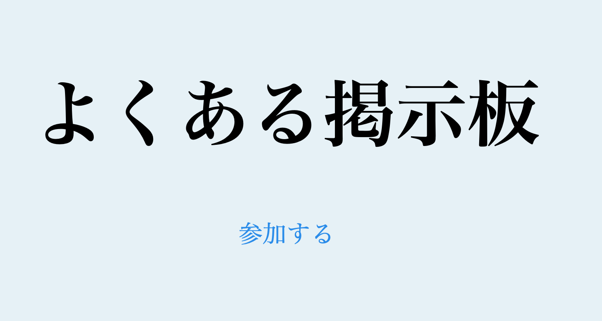

プロフィール
はじめまして、上本秀俊と申します。
学生の頃から「ものづくりに関わる仕事がしたい！」という思いがあり、約4年間、圧力容器製作会社の設計担当として、図面の詳細設計や強度計算書の作成に携わっていました。
しかし、友人との仕事の話をきっかけに「本当にやりたいことは何か？」と自分自身と向き合うようになり、プログラミングの世界に挑戦することを決意しました。
最初は「何から手をつければいいのか」「内容が難しい」と戸惑うこともありましたが、少しずつ理解を深めるうちに「学ぶ楽しさ」を実感できるようになりました。
PHPをはじめ、Laravelフレームワークなどのサーバーサイド開発を中心に独学で学習を続けています。未経験ではありますが、着実にスキルを身につけて実践的な開発に活かせるよう努力しています。
まだまだ成長段階ですが、やる気と根性を持って挑戦し続けますので、どうぞよろしくお願いいたします。
学習経験スキル
学習したスキル一覧です。独学での学習経験のため、学習レベルについては個人の評価となります。
| フロントエンド | ||
|---|---|---|
| スキル | 学習期間 | 学習レベル |
| HTML CSS |
3ヶ月 3ヶ月 |
★★★☆☆ ★★★☆☆ |
| バックエンド | ||
|---|---|---|
| スキル | 学習期間 | 学習レベル |
| PHP Laravel |
6ヶ月 6ヶ月 |
★★★★☆ ★★★★☆ |
| 使用経験サーバー | ||
|---|---|---|
| スキル | 学習期間 | 学習レベル |
| さくらサーバー Apache |
3ヶ月 1ヶ月 |
★★★☆☆ ★★☆☆☆ |
| データベース | ||
|---|---|---|
| スキル | 学習期間 | 学習レベル |
| SQLite MySQL |
6ヶ月 3ヶ月 |
★★★★☆ ★★☆☆☆ |
| その他利用ツール | |
|---|---|
| Vscode | Git |
| 資格 |
|---|
| PHP7技術者認定試験初級 |
作品
掲示板を制作しました。 新規投稿の作成から投稿タイトルの一覧表示、モデルのリレーションを活用した投稿内容の管理など、データの関連付けを意識した設計を行いました。 また、ユーザー同士がメッセージをやり取りできる専用ページの表示機能を実装し、より使いやすいコミュニケーションが取れるよう工夫しました。 新機能実装目的として、お問い合わせフォームを追加し、メールアドレスへユーザーの意見の送信が可能になるよう設計しました。
https://up-2501.sakura.ne.jp
実装スキル：HTML / CSS / PHP / Laravel / SQLite
GitHub